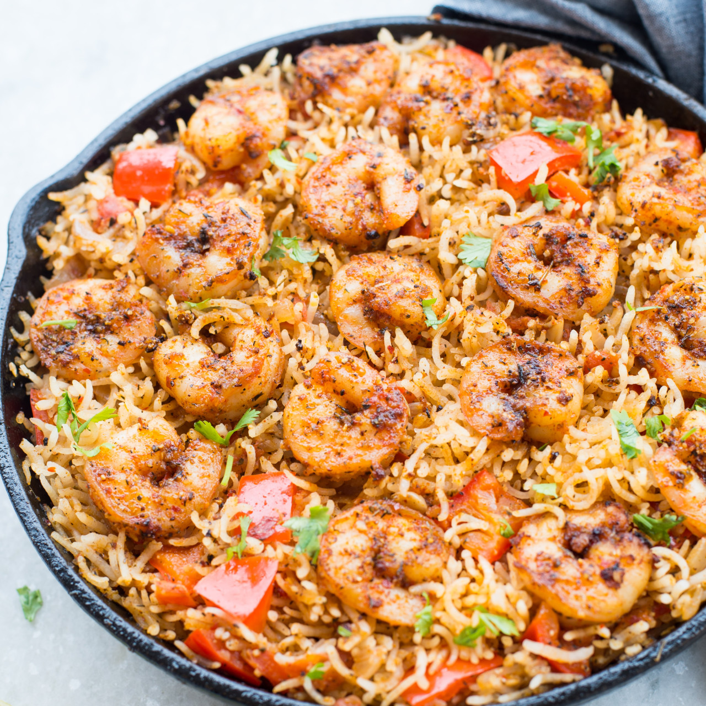

Cajun Rice with Shrimp

Delicious Cajun Rice with Shrimp and Vegetables!
This easy, 30 minute recipe is the perfect busy week night meal. White rice loaded with shrimp, beans, peppers, onion, and tomatoes. It's sure to be a hit with even the pickiest eaters!
Ingredients
- Half a pound of raw shrimp
- 2 cups dry white rice
- 1 onion
- 1 green pepper
- 1 can diced tomatoes
- 1 can dark red kisney beans
- 1 tbsp cajun seasoning
- 3 and a half cups of water
Steps
- Coat a large pan with oil and set heat to medium.
- While the opan is heating, chop the onion and pepper into small, bite sized pieces.
- Place chopped pepper and onion into pan and lower head to medium low.
- Let the vegetables cook until they start to sweat, stiring occasionally. About 5 minutes
- Add the drained and rinsed canned kidney beans to the pan and stir.
- Add the canned tomatoes into the pan and stir.
- add the water and cajun seasoning. Stir well.
- Let the mixture come to a boil, then set the heat to low, cover, and let cook for 15 minutes.
- After 15 minutes, add the shrimp and cook for another 5 minutes covered. Push the shrimp into the rice until they are covered.
- Once all the liquid has absorbed and the shrimp are cooked through, turn the heat off and serve.